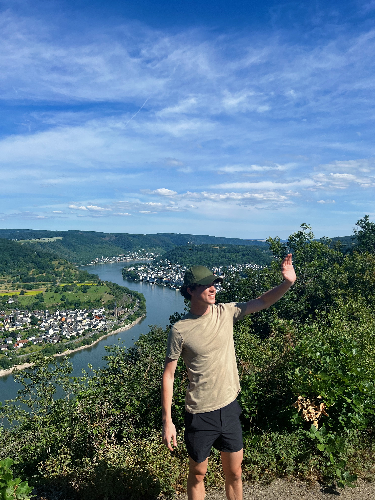
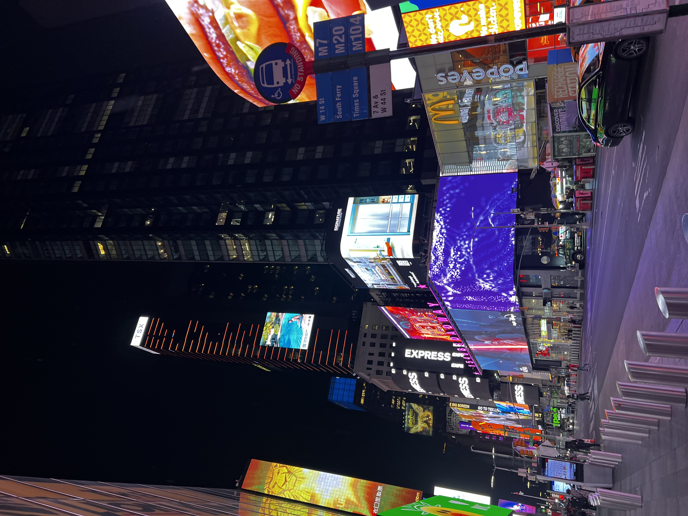
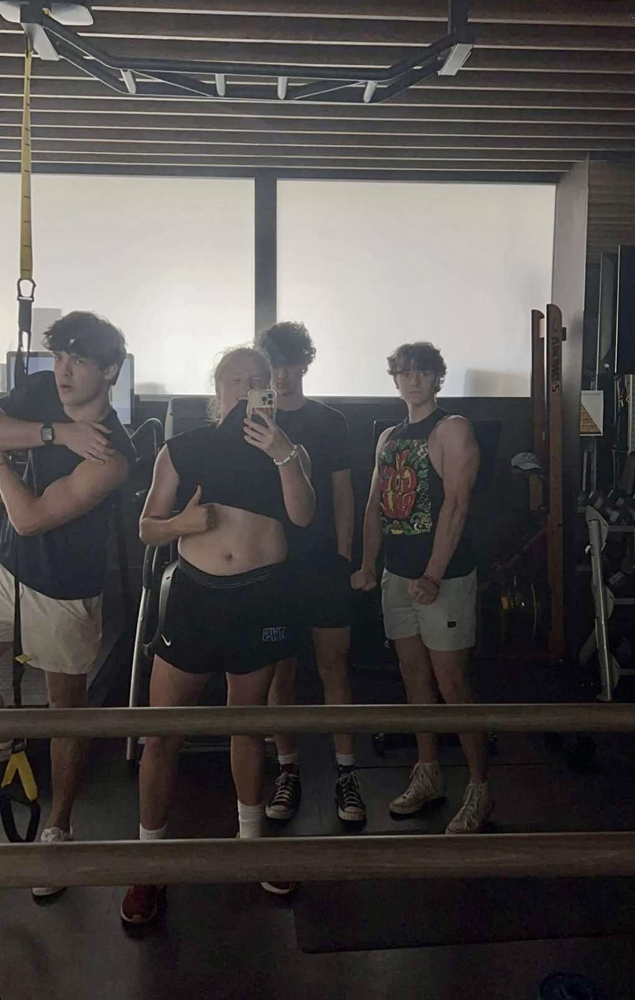
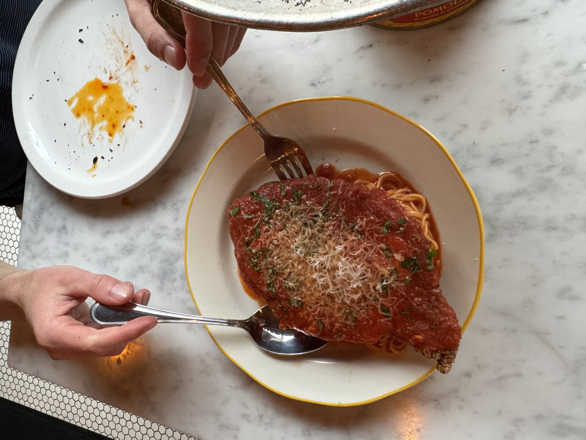
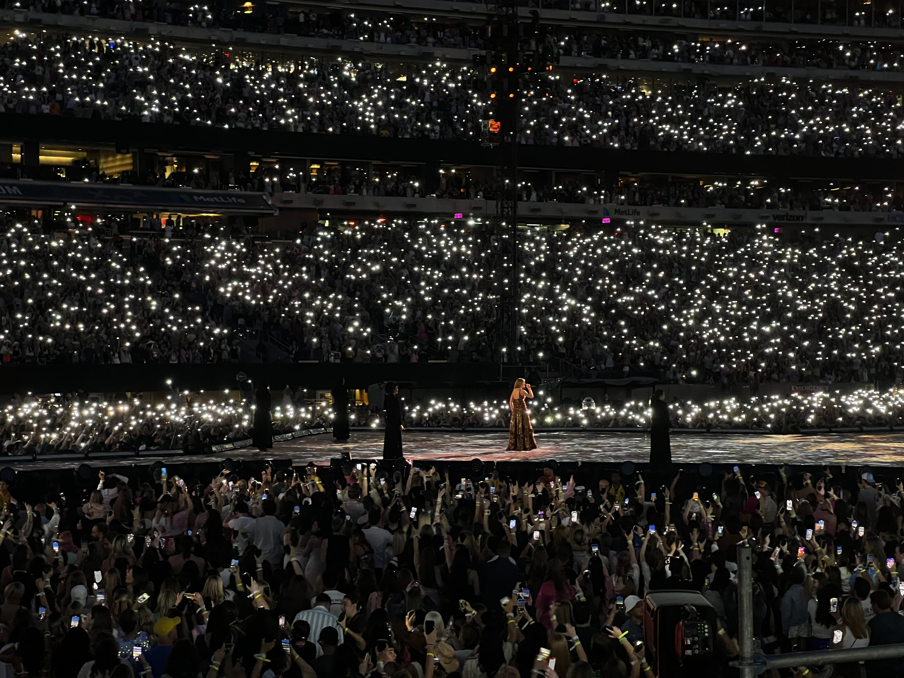
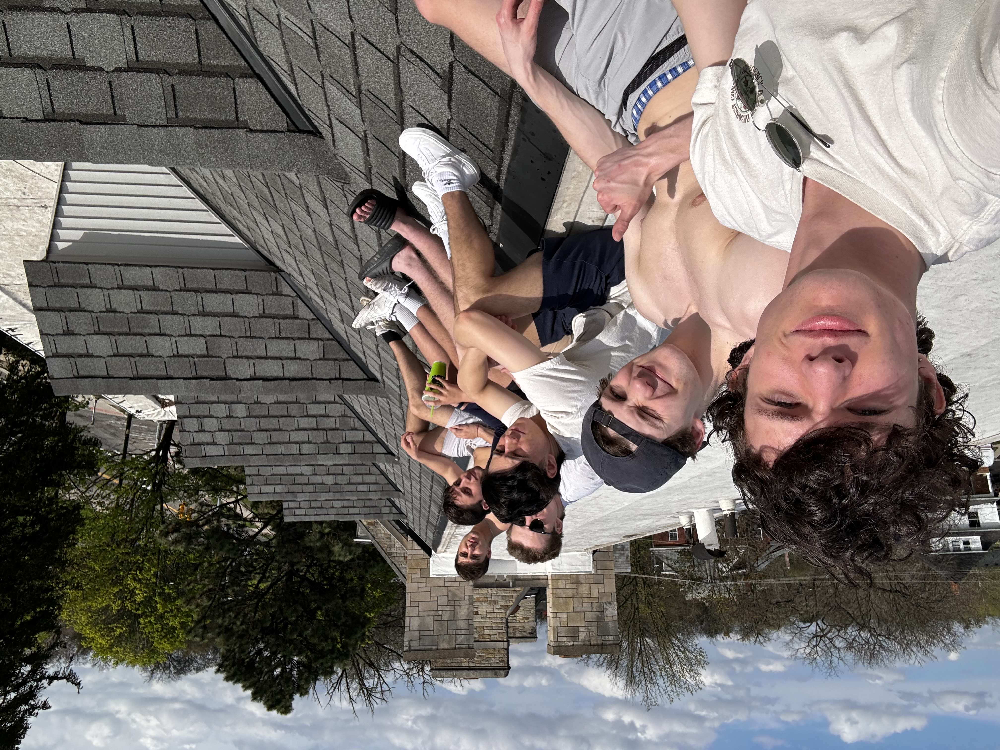
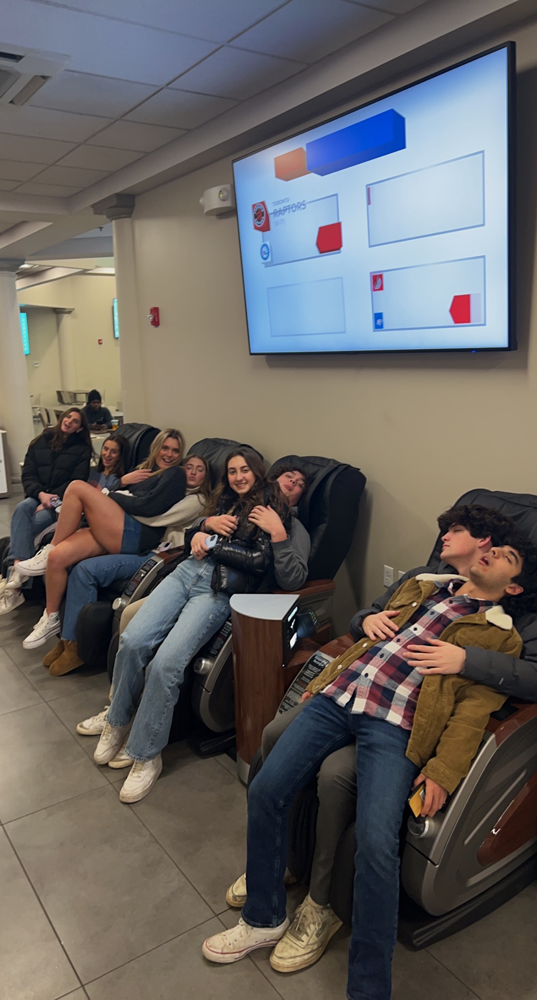

Outside of school, I enjoy staying active through working out and spending time outdoors. I also love hanging out with friends, whether it's exploring new places or just relaxing together. These activities help me unwind, stay balanced, and show some of my personality.
Passions
Nature:

I love nature, I'm super supportive of conservation initiatives. Here's the Black Forest in Germany which I was lucky enough to vist.
Hiking:

Hiking is one of my favorite forms of exercise. It serves as a great way to work out, see new things, and socialize.
Travel:

This is a photo from Switzerland. This is one of the most beautiful places I have ever seen in my life. I can not believe people are lucky enough to live here. I love to travel and see new places and this has been a top 3 for me!
NYC:

Growing up in Connecticut I have always lived near New York City. My cousins live there as well so I often have commuted in and slept there. I am set on living here for at least part of my life, the personality and always moving environment of New York is unrivaled.
Running:

This is a path I run on when I'm at college. Running has always been the way I best like to exercise, it helps clear my mind and focus me for the rest of the day.
The Gym:

I have already said enough how important exercising is to me, here's a funny photo of some of my boys who I love to workout with.
Swimming:

While I tend to avoid water like a cat, I love to swim in a pool with friends over summer. No better way to relax and catch a tan.
Food:

I have a lot of allergies, but that doesn't stop me from constatly trying new foods and restaurants. Here's a photo of one of my favorites, a chicken parm from Mani Osteria in Ann Arbor.
Baking:

While I am still an amatuer, I love to bake. Here is a cake I made in rough condition (it had 7 layers so give me some leeway). I promise my cookies are more aesthetic.
Film:

I love movies and TV. Everything Everywhere All At Once is my favorite. I think film has both a great fun to it but also the ability to impact those watching deeply. I screenwrtie in my freetime and have taken some classes.
Music:

Here's a photo of a Taylor Swift concert my whole family went to. I love all types of music and enjoy attending concerts or talking about it with people.
Friends:


While I need some alone time to recharge I more often than not will want to be around friends and family. Here are some college and hometown friends. Check out this page to see more!
Doing New Things:

I love to meet new people and do new things. Here's me and one of my earliest college friends showing off our light saber skills to a Star Wars club.